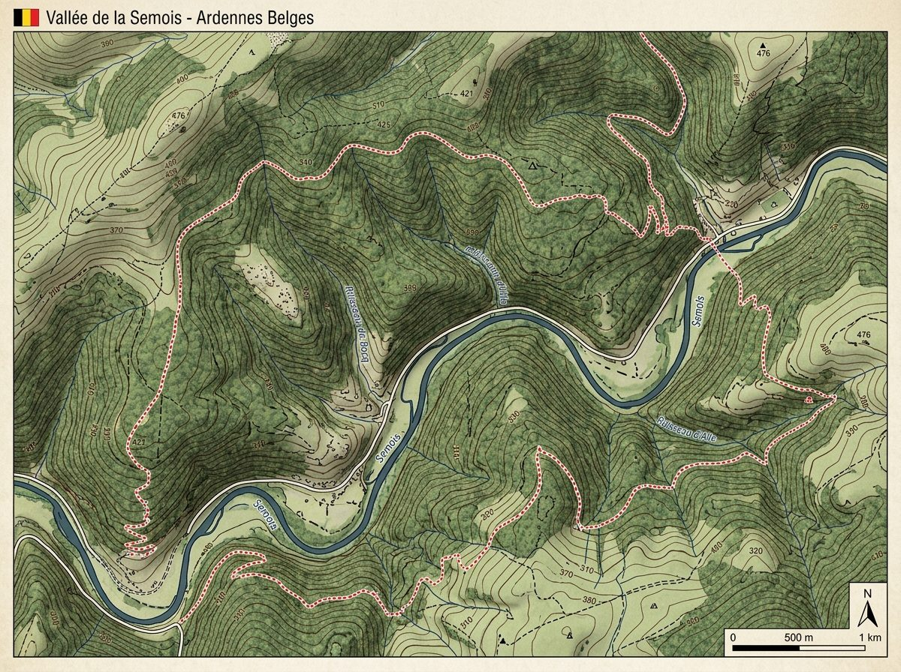

Sélectionne la difficulté correspondant à ton programme scolaire.
Tu as complété les calculs du laboratoire de cartographie.

Génération de la consigne...
Convertis la mesure réelle en centimètres pour pouvoir appliquer l'échelle facilement.
Applique l'échelle (multiplication ou division) puis convertis le résultat final dans l'unité demandée.